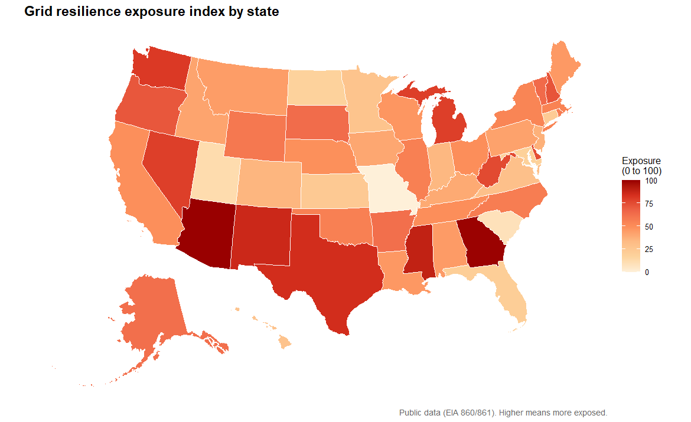

Grid Resilience Exposure Index
Ranking US states by how exposed their electricity systems look, using nothing but public data.

What the score means
Every state gets one number from 0 to 100. Higher means it looks more likely to struggle to keep the power on. The number is built from three pieces, all from public figures.
Outage burden
How often the power goes out and for how long, using the industry measures SAIDI and SAIFI.
Concentration
How much of a state's power leans on one fuel type or a single very large plant.
Exposure deficit
Whether there is much spare capacity above peak demand, and how varied the supply is.
The three pieces are put on the same scale and blended. The weights live in one settings file, so they are easy to change and re-run.
Most exposed states
The score blends three parts, and how much each one counts is a judgement call. Drag the weights and the ranking re-sorts live.
| # | State | Score | |
|---|---|---|---|
| 1 | Arizona | 100.0 | |
| 2 | Georgia | 99.5 | |
| 3 | Mississippi | 89.2 | |
| 4 | New Mexico | 86.6 | |
| 5 | Texas | 84.7 | |
| 6 | Washington | 80.9 | |
| 7 | Michigan | 79.3 | |
| 8 | Nevada | 79.1 | |
| 9 | West Virginia | 76.0 | |
| 10 | Delaware | 74.4 | |
| 11 | New Hampshire | 72.7 | |
| 12 | Oregon | 71.6 | |
| 13 | Vermont | 64.6 | |
| 14 | South Dakota | 63.7 | |
| 15 | Arkansas | 62.8 |
Showing the top 15. At the default 45 / 30 / 25 this matches the pipeline output. Push the weight onto one part to watch states like West Virginia climb or slide.
How it was built
The analysis runs in Python: it pulls the public data (or falls back to a built-in sample),
cleans and joins it, scores each state, and writes the charts and a results table. The map is
drawn in R with the usmap package, which lays out all 50 states including Alaska and
Hawaii. The same results are exported as a GeoPackage, so they open in mapping software like QGIS.
Built with pandas, matplotlib, ggplot2 and geopandas. Python and R at an intermediate level; the GIS side is more of a first pass, a shaded state map and an exported layer I can build on later.
Run it yourself
With Python installed, from the project folder:
# install the libraries, then run the pipeline
pip install -r requirements.txt
python pipeline.pyFull setup notes, including the optional R map and how to plug in a live EIA data key, are in the project README.